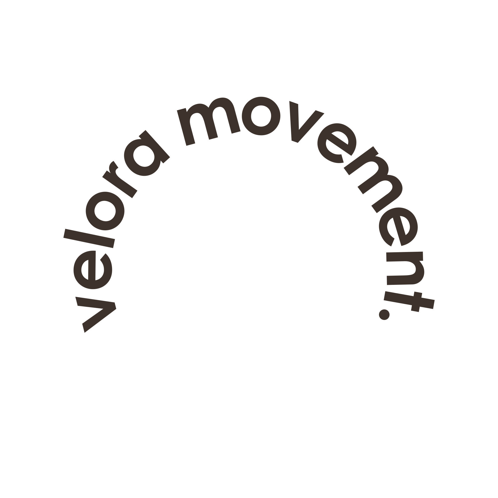

Löysin oman rytmini, vihdoin.
Velorassa sain luvan hidastaa. Enää en suorita, vaan nautin liikkeestä ja hengityksestä. Olo on kevyempi niin matolla kuin sen ulkopuolella.
Velora kasvoi jäsenien kanssa.
Velora on siskosten Annan ja Eevan vuonna 2021 perustama studio Helsingin Punavuoressa. Molemmat olimme tehneet vuosia töitä ohjaajina eri saleilla ja halusimme oman paikan, jossa ryhmät pysyvät pieninä ja ihmiset tunnetaan nimeltä. Aloitimme yhdellä salilla ja muutamalla viikkotunnilla; nykyään tunteja on läpi viikon aamusta iltaan. Aukioloajat ja tuntien rytmin olemme suunnitelleet niin, että tänne ehtii työn ja arjen lomassa.
Tutustu tunteihin →

Jokainen hetki matolla on tilaisuus pysähtyä. Harjoittelemme läsnäoloa, emme suorittamista.
Pieni studio, tutut kasvot. Täällä jokainen kuuluu joukkoon omana itsenään, ilman vertailua.
Kuuntelemme kehoa ja kunnioitamme sen rajoja. Liikkeen kuuluu tuntua hyvältä.
Velorassa sain luvan hidastaa. Enää en suorita, vaan nautin liikkeestä ja hengityksestä. Olo on kevyempi niin matolla kuin sen ulkopuolella.
Lämmin ja kiireetön tunnelma sai minut palaamaan viikoittain. Uni on syventynyt ja stressi helpottanut huomattavasti, ilman suorittamisen tunnetta.
Ei peilejä, ei kilpailua, vain kannustava yhteisö. Tunnen kuuluvani joukkoon ensimmäistä kertaa vuosiin, ja se näkyy koko viikossani.
Tunnin ajan saan olla vain läsnä. Palaan kotiin levollisempana ja läsnäolevampana myös perheelleni, ilman suorittamisen painetta.
Selkä on kiittänyt ja mieli rauhoittunut. Pieni viikoittainen hetki on muuttunut koko viikkoa kannattelevaksi voimavaraksi.
Täällä ei kilpailla kelloa vastaan. Opin kuuntelemaan kehoani ja nauttimaan liikkeestä omaan tahtiini, juuri sellaisena kuin olen.
Vuosien jälkeen uskallan taas liikkua ilman pelkoa. Velorassa keho saa olla juuri sellainen kuin se on, ja se tuntuu vapauttavalta.
Ohjaajat muistavat nimeni ja huomioivat juuri minut. Tällaista lämpöä en ole kokenut missään muualla salilla.
Opin päästämään irti suorittamisesta. Nyt liike ja hengitys kulkevat yhdessä, ja arki tuntuu kevyemmältä.
Odotan jokaista tuntia. Se on hetki vain itselleni, ilman kiirettä ja vaatimuksia, ja sen vaikutus kantaa läpi koko viikon.